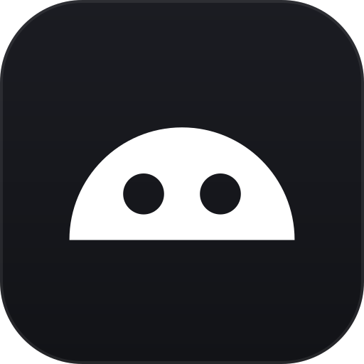

256Three marks, all one flat colour, all readable at 16 px. Nothing here is applied: the app icon, the tray icon and every UI asset are untouched. These are candidates only.

256The idea. A soft square head whose eyes are two tall slots rather than dots — a visor, not a face. Why it holds up. A slot keeps its edges when a 3 px dot turns to mud, and the low, wide set is what keeps the silhouette off the generic chat-bubble.

256The idea. The antenna is negative space: a slot cut through the top edge, which is where a notch would be. Why it holds up. Nothing else in this category has a notch, so it is the one detail that cannot be mistaken for a chatbot.

256
icon 128The idea. A tall capsule head with one corner bitten out, and the antenna fused to the crown so the whole thing is one silhouette. Why it holds up. It is the only asymmetric mark here — every chat logo is mirrored, and this one is not.
Open this file directly in a browser. The marks are drawn white on transparent; on the light board
the image is inverted, so what you judge is one file used in both directions. At 32 and 16 the
scaling is image-rendering: pixelated on purpose — that is what Windows actually
does to a 16 px icon, and a mark that only survives smooth scaling is not a 16 px mark.
Nothing in this folder is referenced by the app: no build step reads it, and
dev/icon/master-b.png is still the app icon's only source.